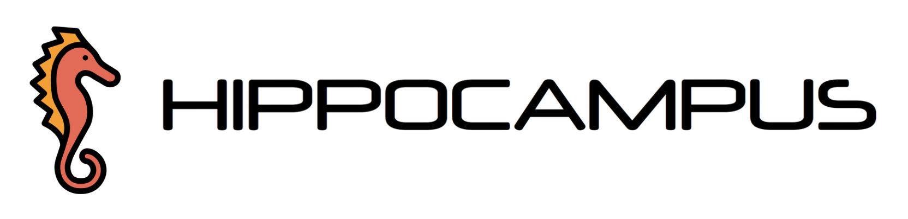

Logo y Nombre

Descripción
Aplicación web que unifica diferentes herramientas y servicios comúnmente usados por los estudiantes de la UCM que facilita y agiliza el acceso a estas.
Aplicación web que unifica diferentes herramientas y servicios comúnmente usados por los estudiantes de la UCM que facilita y agiliza el acceso a estas.